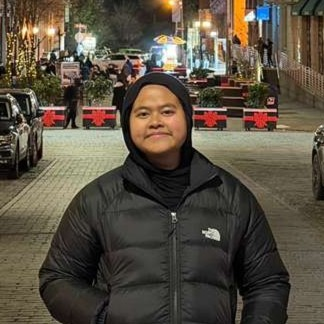

About Me
Neoma Reza
I am a Computer Science student at the University of Alabama with a minor in Computing Technology and Applications.
I am interested in software development, systems engineering, automation, and data-driven process improvement.
I enjoy designing and building tools that improve workflows, automate manual processes, and make systems easier to use and manage.
Through my coursework, internships, and industry-sponsored projects, I have gained experience in Python, C/C++, SQL, web development,
automation tools, databases, and data analysis. I have worked on projects involving web applications, process automation, reporting dashboards,
database systems, and embedded systems programming.
I am particularly interested in roles related to software engineering, systems engineering, technical support engineering,
or automation engineering, where I can work on large systems, solve technical problems, and continue learning new technologies.
